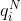

Measuring the entropy/redundancy of the English language has long been an interest of linguists, psychologists, and information theorists alike. The true entropy of text is given by the generating distribution of the human writing the text. The entropy of text can be upper bounded by the cross-entropy of that text under a particular model, where model could be a human guesser or a probabilistic algorithm. In the past, it was generally assumed that humans could upper bound the entropy of text better other probabilistic models existing at the time; language is generated by humans after all. However, measuring the entropy of text under a human's language model is non-trivial, as humans don't just output probability distributions. A couple of well known past works have used text predictions from human subjects to yield estimates for the entropy of the English language that are widely cited today.
The entropy of a discrete random variable is given by Claude Shannon's famous equation:
When referring to the entropy of English text, people generally mean the average conditional entropy of a character of text, measured in bits/character, given the history of text. The entropy of a distribution p can be upper bounded by using distribution q as an approximation to distribution p. The cross entropy of p approximated by q is given by:

While exactly measuring the entropy of English text is impossible without the thought process of the human generating the text, a tighter upper bound can be established with a better approximating distribution. In this post, I compare how well recent deep learning models can upper bound the entropy of English text versus human subjects in past work.
In 1951, shortly after developing information theory, Shannon attempted to estimate the entropy of the English language using what is now known as the "Shannon game". Human subjects repeatedly guessed the next letter of text until they got it right, and then moved on to guessing the next letter. Shannon was able to use the number of guesses for each symbol to estimate bounds to the human-level entropy of text prediction. If the model (or human) guesses the next symbol in descending order of probability, the entropy of the data under the model can be upper bounded using the entropy of the distribution over the number of guesses it takes the model to predict the next symbol. is the frequency that the model playing the Shannon game guesses the next symbol correctly on the ith guess (on the Nth character). The entropy of this distribution, which is the upper bound for the entropy of the generating distribution of the data, is given by:

This upper bound is achievable because the model could always assign probability to its ith guess and it would achieve this cross-entropy. However, doing this would not allow the model to update the relative confidence of its guesses depending on its context, which is why this is only an upper bound. Using this formula with his human text predictors, Shannon estimated the upper bound of the entropy of English text to be ~1.3 bits/character. See Shannon's paper for more details.
The main drawback of the Shannon game is that models have no way to specify how confident they are in their predictions. In 1978, Cover and King devised a more precise way to measure the human-level entropy of text, where subjects played a modified version of the Shannon game where they also waged bets on how confident they were in their guesses. Cover and King showed that an ideal gambler's wagers as a percentage of their current capital are proportional to the probability of the next symbol, and thus were able to establish a direct relationship between the return of the gambler and the entropy of the data under the gambler's model. Cover and King also provided the exact excerpt of text they used in their paper, making direct comparison with future work possible. They used 12 human subjects to measure the entropy from an excerpt taken from the book Jefferson the Virginian, (which was the same book but a different excerpt from what was used in Shannon's experiments). The subjects predicted the 75 characters of bold text (case insensitive and excluding punctuation) with the help of statistical models, and were given access to the entire book up to this excerpt to allow them to adapt to the author's style. The subjects, made up of students and professors at Stanford, were apparently very dedicated to achieving the best performance possible, spending an average of 5 hours each at a computer terminal to make predictions on just 75 characters of text.
She was not only a “pretty lady” but an accomplished one in the customary ways, and her love for music was a special bond with him. She played on the harpsichord and the pianoforte, as he did on the violin and the cello. The tradition is that music provided the accompaniment for his successful suit: his rivals are said to have departed in admitted defeat after hearing him play and sing with her . In later years he had the cheerful habit of singing and humming to himself as he went about his plantation. This is not proof in itself that he was a pleasing vocal performer, but with Martha in the parlor it
I apply some recent state of the art advances in character-level language modeling from my own work to compare with the human prediction results from Cover and King. I used model pretrained on the text8 dataset, which is a commonly used character-level prediction benchmark. The model uses 2 recent advances:
Multiplicative LSTM- This is an LSTM modification that uses additional input dependent gates, which modify the recurrent weight matrix depending on the input symbol. The edges represent multiplication by a matrix, and the inputs to the square nodes are multiplied, allowing for the effective recurrent weight matrix to be different for each possible input symbol.

Dynamic evaluation- This is an adaptation technique for capturing re-occurring patterns in sequences, and is useful for modeling the rare words or style of a particular sequence. When used for sequence prediction, the model predicts a distribution over the next sequence element, and then does a gradient descent update on that sequence element before predicting the next sequence element. An unrolled RNN is shown in the figure. A standard RNN uses fixed weights and only uses a hidden state to summarize the sequence history, whereas a dynamically evaluated RNN also uses gradient information stored in dynamically changing weights.

The distribution of the training set and test set are noticeably different, as text8 is taken from modern Wikipedia, whereas the excerpt is from a book written in 1948. To partially make up for this, I gave the entire book up until the test sequence as conditioning text to allow the model to adapt to the author's style. Perhaps better results could be achieved with a full retraining on a dataset of text from this author or time-period. Here were the results, in comparison to the human level results given by Cover and King's paper.
| method | cross-entropy (bits/char) |
|---|---|
| Human (avg subject) | 1.59 |
| Human (based on avg gambling return) | 1.34 |
| Human (best subject out of 12) | 1.29 |
| Human (ensemble of 12) | 1.25 |
| mLSTM (without dynamic eval) | 1.44 |
| mLSTM (with dynamic eval) | 1.31 |
State of the art character-level language models performed on par with the best human text predictors, both achieving cross-entropies of ~1.3 bits/character on the tested text excerpt. It is likely that deep learning models and human models make different kinds of errors; for instance, humans are much better at understanding the higher level structure and logic of the text, whereas deep learning models may be better at knowing their own confidence, and may capture certain statistical regularities that humans fail to notice. Deep learning models also don't have to worry about becoming impatient or bored during monotonous tasks. Assuming human and deep learning models make different kinds of mistakes, it is likely they could be ensembled or combined in other ways to further reduce the upper bound on the entropy of text.
Some of the first work to rigorously upper bound the entropy of English using probabilistic models used a combination of character models and trigram word models, and achieved a cross entropy of 1.75 bit/character.
Work in 2002 examined the relative performance of humans vs. statistical models at word prediction.
In addition to the advances used in this post from my own work, other recent work has also helped improve the state of the art in language modeling, including improvements to regularization such as given in AWD-LSTM, and expressiveness of language models as given in the Mixture of Softmaxes method.